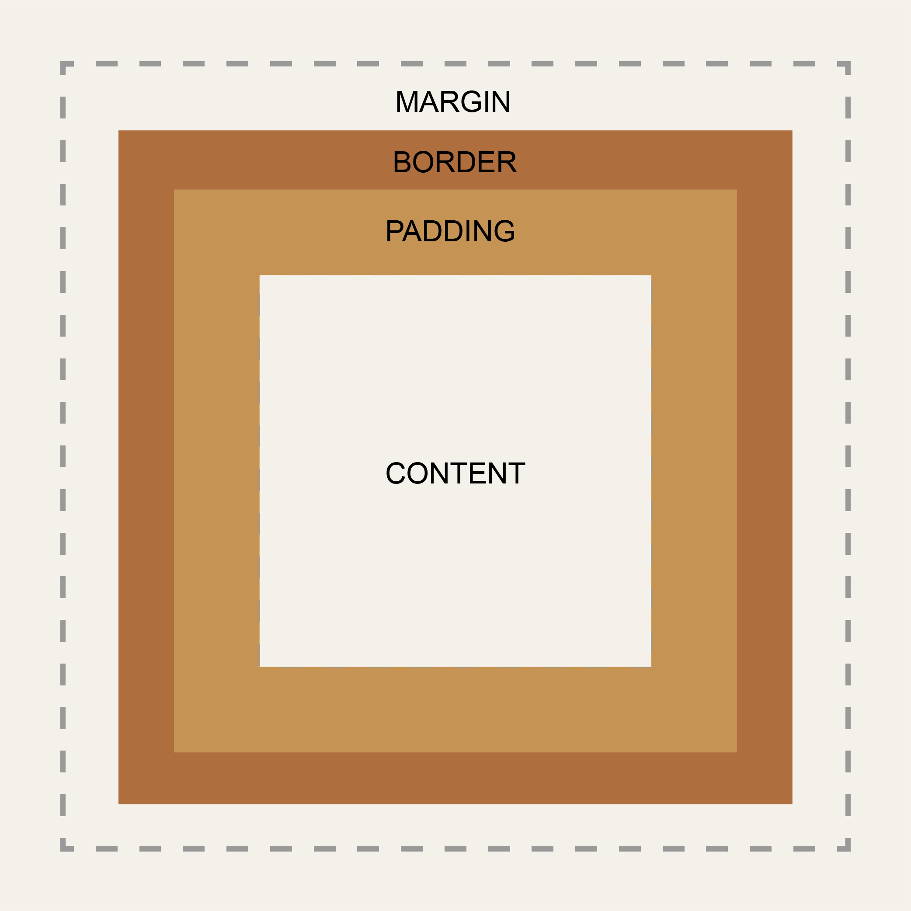
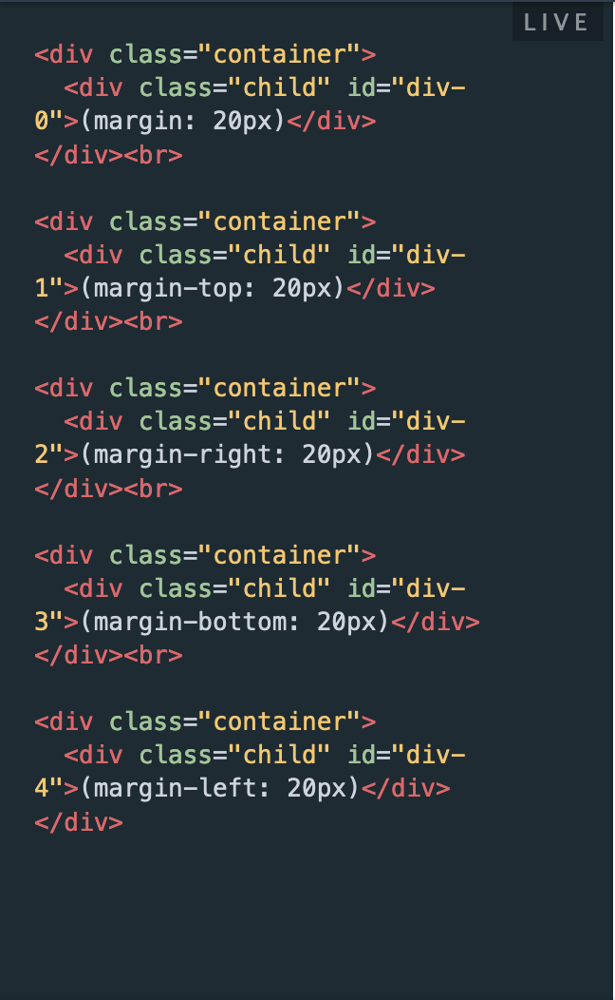
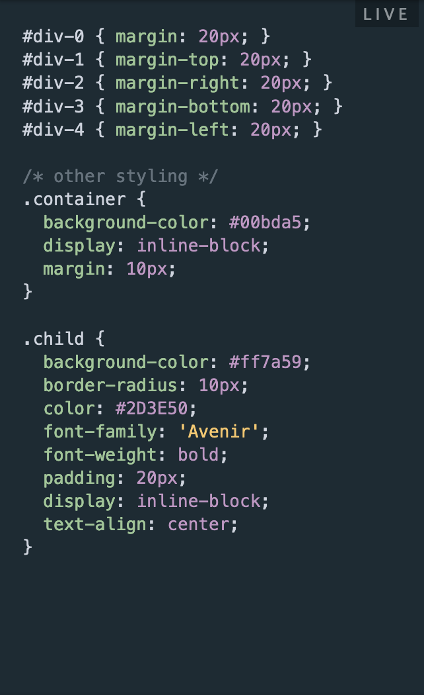
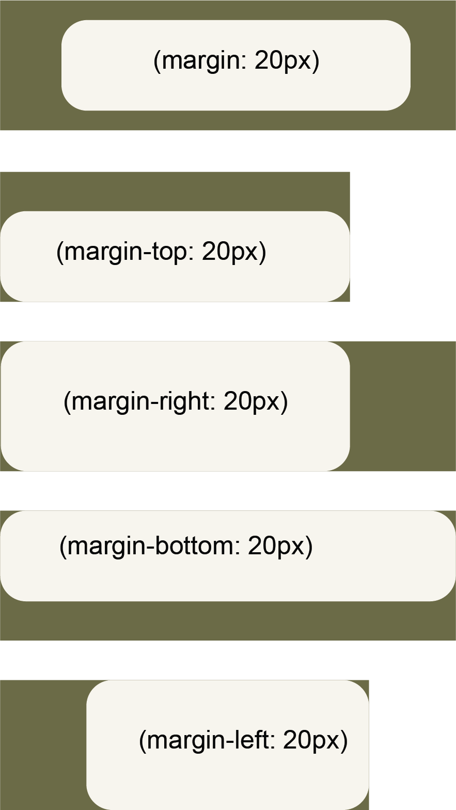
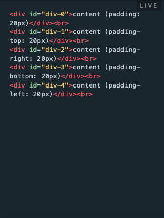
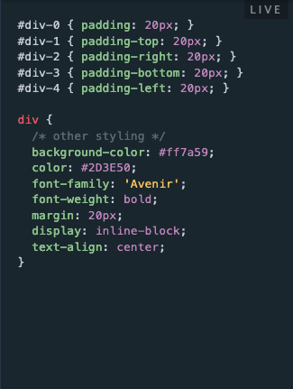
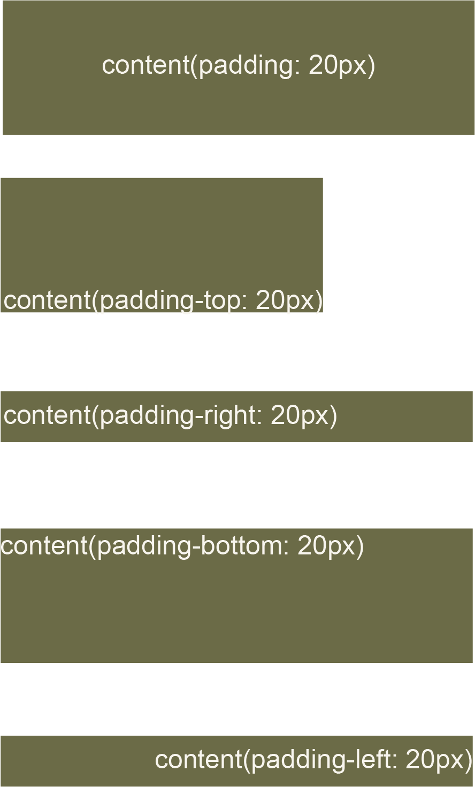

Sprint 2
Topic: Identity, Values and Strengths Learning Plan
What is the difference between Margin, Border, and Padding?
The border is the layer of the HTML/CSS element that sits between margin and padding. By default, the border does not have any width, but you can set one with the border property.
Margin and padding are always parts of an element, even if there’s no visible border. This image below illustrates such a case:

To set the same margin value on all four sides of an element, use the margin property.
To set the margin for specific sides of an element,
use the margin-top,
margin-right,margin-bottom,and
margin-left properties.
| HTML Example: | CSS Example: |
|---|---|
|  |  |
| Results: | |
|  | |
Like with margins, padding has four sides to be declared: top, right, bottom, and left.
To set padding on all sides, use the shorthand property padding.
To set padding for a specific side, use the padding-top,padding-right,
padding-bottom, and padding-left properties.
| HTML Example: | CSS Example: |
|---|---|
|  |  |
| Results: | |
|  | |
You can also specify the margin & padding property with two, three, or four values
depending on the sides you want to apply margins to.
If you want even margins or padding on every side, you’ll only need to apply one value. Otherwise, the order of the values is important:
In conclusion, margin, border, and padding go hand-in-hand when it comes to designing your website.
All of these properties help in making a website more breathable, readable, and appealing, when configured correctly.